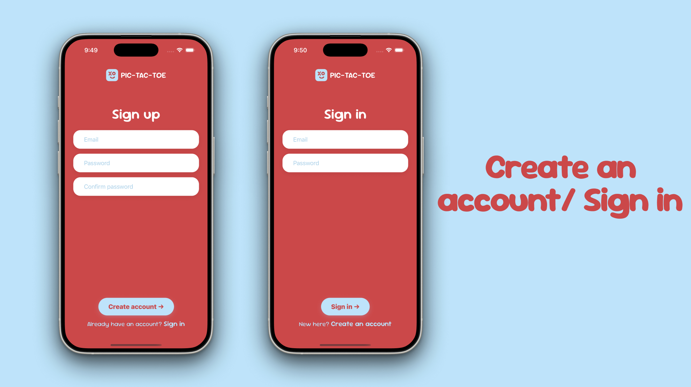
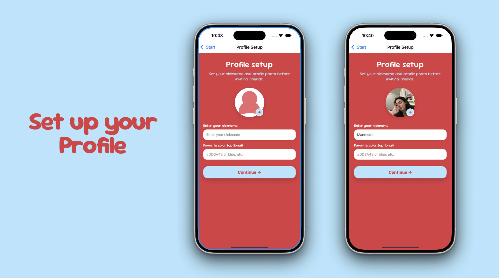
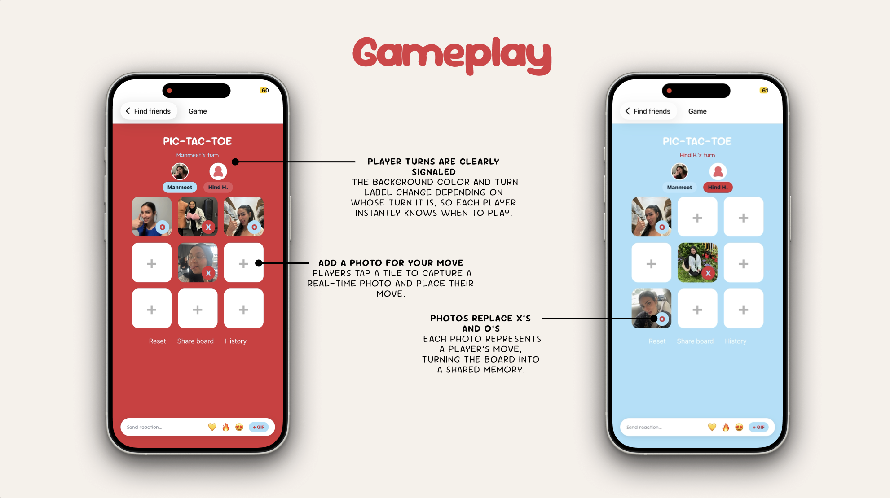
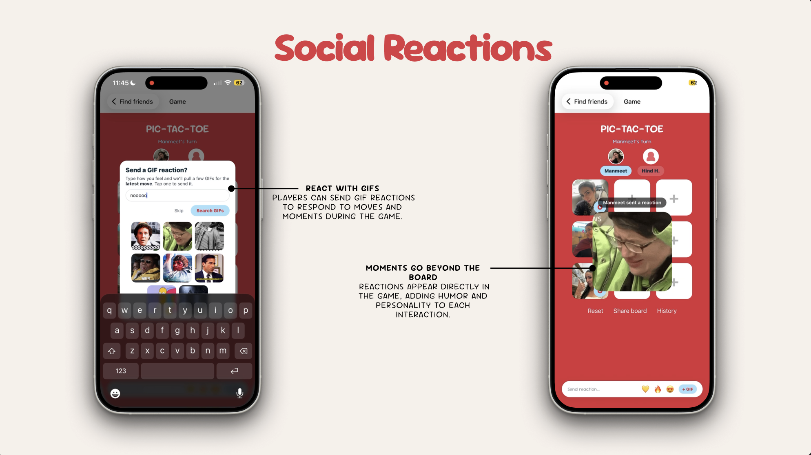
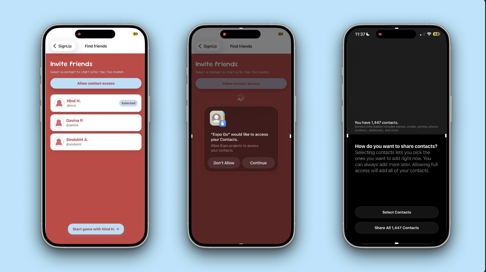

Phase 1
Concept & Ideation
The concept came from noticing a tension in how Gen Z stays connected. We are not lazy; we are
selective. Texting can feel like effort, but sharing a moment feels effortless when it has a reason.
Pic-Tac-Toe gives you that reason: it is your turn.
In the first two weeks, I shared my vision with my teammate Hind, who translated it into sketches
and logo iterations. We went through multiple logo directions and tested color palettes together.
I kept pushing for something gender-neutral, and we landed on a red and blue pairing that felt
energetic without leaning into either direction. I gathered feedback from friends, family, and
classmates to select the final logo direction.
We drew inspiration from BeReal's spontaneity, Locket's intimacy, and the simplicity of a game
everyone already knows. The design goal was to feel playful and social, not gamified or competitive.
Phase 2
Auth & Profile Setup


I built the full authentication flow using Firebase Auth: sign up with email and password,
sign in, and a profile setup screen where users pick a nickname, an optional favourite colour,
and a profile photo from their camera or gallery.
Profile preferences are saved locally with AsyncStorage so the app remembers who you are between sessions.
After sign-in, the app checks whether a nickname already exists and routes the user to either
Find Friends or back to Profile Setup. It is a small but important detail that makes returning users feel
at home immediately.
Phase 3
Game Screen & Core Logic


The game screen was the most technically demanding part of the project. I built the core game
logic from scratch using React Native, building a 3x3 board where each cell holds a photo URI and a
player tag. Win detection checks all eight classic Tic-Tac-Toe lines after every move.
A draw is detected when all nine cells are filled with no winner.
I used tutorials and documentation to understand the win-checking algorithm, then adapted it
to work with a photo-cell data structure rather than simple X/O strings. The background color
of the entire screen switches between red and blue depending on whose turn it is, giving each
player a clear, immediate signal without any extra UI elements getting in the way.
Key systems I built in the game screen:
- Photo-per-tile board where each cell stores a URI and player tag; players choose camera or gallery on every move
- Win detection across all 8 lines after every move, with draw detection when all cells are filled
- Dynamic background and avatar highlight that switch color per turn (red for P1, blue for P2)
- Haptic feedback patterns: a celebratory vibration burst on win and a short double buzz on draw
- Match results saved to SQLite via a local database utility, tracking winner, move count, and board state
- Victory overlay with confetti cannon, winner photo, and a native Share sheet to post the result
- Player avatars and nicknames pulled from AsyncStorage profile prefs and displayed live in the game header
Phase 4
Social Reactions & GIF System


A persistent reaction bar sits at the bottom of the game screen throughout the match. Players
can fire quick emoji bursts at the last move and the emojis float over the tile like a sticker.
They can also search and send a GIF using the GIPHY API, which pops up as a large overlay in the
middle of the screen with a "sent a reaction" badge showing who sent it.
I integrated the GIPHY API to handle the search and retrieval of GIFs based on a text query.
Results appear as a scrollable grid of thumbnails inside a modal, and tapping one closes the modal
and triggers the full-screen GIF overlay. A one-time hint modal introduces the reaction bar the
first time a player places a photo, after which it is dismissed and never shown again.
Phase 5
Match History & Find Friends


Every completed match is saved to a local SQLite database and displayed in the Match History screen.
Each entry shows the date, winner, and move count. Players can delete individual matches or
reset everything. The list supports pull-to-refresh so new matches appear immediately.
The Find Friends screen requests contacts permission and maps real device contacts into the game
flow. If permission is denied, it falls back gracefully to a demo contact list so the app stays
usable. Once a friend is selected, both player names are passed into the game screen and used
throughout: in the turn label, the winner overlay, and the match history record.